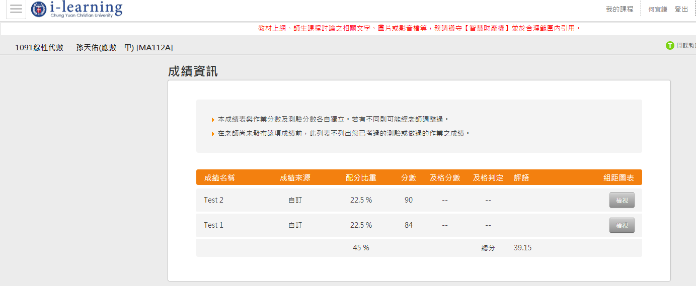
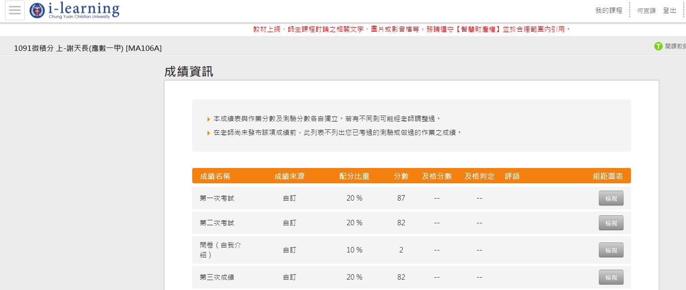

申請人:何宜謙
個人簡介
老師您好，本名何宜謙，現年18歲，目前就讀於中原大學應用數學系一年級,畢業於嘉義高中。在成長階段中，父母注重我在課業上的表現，更鼓勵我們透過多方嘗試找出自己的興趣，也使得我有了對一切充滿好奇心的性格，我想充滿好奇心的性格使我更能在眾多的程式語言中不倦怠的精進自我，從小到大的求學過程中，夢想未來能做運動員，機師，等形形色色的職業，而到了大學跟隨哥哥得腳步學習程式語言，才發現這才是自己所愛，並且願意一生學習的東西。
為甚麼想成為軟體工程師
會想成為軟體工程師起先是看到哥哥用著電腦不是玩遊戲，而是開啟方格的視窗，從鍵盤輸入一串串的英文和數字就能產生好玩的小遊戲，或是各種的網頁，好像很有趣，自己也想像他一樣當個電子世界的魔術師，於是開始踏入了程式語言這條路，並且期許自己未來能當個全端工程師。
為了成為工程師，曾經做過甚麼努力
剛開始學習程式語言時，曾上網搜尋初學者如何學習是比較妥當的，而意外的發現了老師的Python教學影片，從而開始了網路上學習程式語言，而在看完了老師的Python網路上的所有教學後，又獨自上網搜尋了網頁如何製作，從而學習到了Html，Css的粗略基礎，未來也希望能夠多學一點前端，後端以及資料庫的語言，朝著成為全端工程師的夢想前進。如果有幸能夠入選老師的軟體工程師扶持計畫，也希望能夠藉著這個計畫學習更多當個全端工程師必備的基礎知識。
對於工程師職業想像是甚麼
在還沒學程式語言之前我想像的工程師是整天待在辦公室吹冷氣，敲敲鍵盤，就有錢可以領的輕鬆工作。而在學習程式語言後我想像的工程師就如同電腦上的魔術師，能夠藉著敲打鍵盤，運用各種程式語言，把腦中所想的事情具體化實現在螢幕上。
如果參與這個計畫，會怎麼安排學習時間
雖然我目前還在就學，但大學相比起國高中有更多可以自由學習的時間，學習程式語言時我也是透過沒課的時間全力透過網路教學學習，並且大一數學系的三門主科(微積分 線性代數 基礎數學)也都在考試中拿到80分以上的成績。而如果有幸能加入此計畫，我有信心能夠在課餘的時間學習程式的同時又能兼顧好自己的主科。

(因為基礎數學成績老師沒有登入在網路上，所以沒有照片。)
如果參與這個計畫，預期會碰到甚麼困難?你打算怎麼解決它
我自認不是天資聰穎的人，在學習程式語言時我總會上完後面的課程，而前面影片所教的東西就忘記了，但我學一次會忘記，我會重學第二次，第三次......就算學一百次還不能記住我也會毫不猶豫地學第一百零一次，因為學習程式語言並且當上工程師就是我的夢想，也是我願意一直做下去的事情。如果有幸參與這個計畫，我想也會遇到同樣的問題，解決的方法也是不斷不斷去學習，一次學不起來我還有第二次，第三次......。
想要對我們說的事情
雖然我目前還在就學中，而這個計畫是專門給幫畢業或待業想成為軟體工程師的人參語的計畫，但我有信心能夠參與這個計畫完成每個禮拜的功課和任務，且在功課上也不輸給其他同儕，希望老師能夠給我這個機會證明自己做得到，並且會做得比其他人都好。